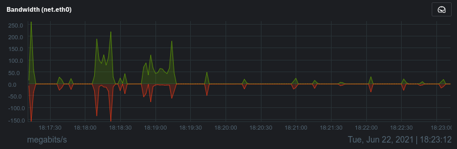

The cause of this is usually an issue with the cookies in your local browser cache. You can test/bypass the browser cache by opening an incognito window :fas fa-user-secret: or whatever the equivalent is called with the browser you are using and try to login there. If that works but the normal way did not, then clear your browser cookies :fas fa-cookie-bite:.
If you would like to help keep the site running, go to How to Support/Donate.
!> Check the Cookies and other site data option from either the Basic or Advanced tab. Note this is different than cache. Cookies :fas fa-cookie: for all sites will be deleted.
!> If you feel the issue resides on the server-side, check the status page and/or the real-time server statistics.
:fa-solid fa-user-slash: If you have entered an invalid username/password 5 times within 15 minutes your IP address will be banned for 4 hours. When this happens you will not receive an error message, the website will simply not load and you will be staring at either the spinner :fas fa-spinner fa-spin: or a white screen.
You can either wait 4 hours and try again, try from a different public IP address, or you can let me know and I will reset the password/unban you.
Conf:
[jellyfin]
backend = pyinotify
enabled = true
port = 80,443
protocol = tcp
filter = jellyfin
maxretry = 5
bantime = 14400
findtime = 900
logpath = /usr/local/jellyfin/config/log/log_*
action = iptables-allports[name=jellyin, chain=DOCKER-USER]
ignoreself = true
ignoreip = 47.150.254.140,172.18.0.1,172.18.0.2,172.18.0.3:fa-solid fa-house-signal: I wanted to include the following tip at the very top of this section because I had this exact problem. If you are a WiFi user, the first troubleshooting step you can perform on your own is to get off the wireless and hardwire yourself in with a standard CAT 5e/6 ethernet cable :fas fa-ethernet:. If you only have CAT 5, do yourself a favor throw that shit away.
If you insist on using WiFi, then you are going to need to ensure that you are connected to a SSID that uses 802.11AC (or the newer 802.11AX aka WiFi6) and is using a channel width of 80, or 160 MHz.
?> Keep in mind larger channel widths provide higher bandwidth at the expense of additional congestion of the wireless spectrum for neighboring devices. The 802.11N standard can utilize both 2.4 + 5 Ghz frequencies. Just because you assume you are on 5 Ghz (by connecting to a SSID with “-5G” appended), that technically does not indicate you are on 802.11AC. If you need help to do simple verification, contact your nearest tech-savvy family relative instead of me.

QUALITY is set to AUTOPLAYBACK DATAPlayback Info, determine the play type displayed next to Play method:DirectPlay, this means the server is streaming the direct media file to your computer without a problem, however the cause of intermittent buffering/glitching could be due to you not having enough bandwidth to support the playback of the media file. This does not necessarily mean your ISP connection does not have enough bandwidth, but could mean:

You can also get a sense for how much bandwidth is required by looking at the videos bitrate info which is available by clicking on the ellipsis :fa-solid fa-ellipsis-vertical: of the medias image poster, then clicking Media Info.
 …
… 
:game_die: First, try to eliminate the more obvious culprits such as using an old device, system, operating system, or browser.
If you would like to help keep the site running, go to how to Support/Donate.
?> The streaming software (Jellyfin) does have logic which determines that your networks ingress (download) bandwidth is insufficient to stream the video playback and will automatically start attempting to transcode the media from its original format into a format that is more compatible with your device. When this happens you will have a delay of at least a few seconds before playback (usually between 5-15 seconds). Additional reasons for transcoding can be found under Play method: discussed further above. If it is transcoding, the play method will state HLS and not DirectPlay.
RARBG in the suffix is recommended if the other is not working for you.vnstat -i enp4s0 -tr 30
44816 packets sampled in 30 seconds
Traffic average for enp4s0
rx 11.74 Mbit/s 993 packets/s
tx 337.67 kbit/s 499 packets/s 
General rule of thumb—if the content’s bitrate > 10,000 Kbps it is going to require a faster connection.
$ speedtest-cli
Retrieving speedtest.net configuration...
Testing from Frontier Communications.
Retrieving speedtest.net server list...
Selecting best server based on ping...
Hosted by Whitesky Communications LLC (Los Angeles, CA) [29.64 km]: 16.822 ms
Testing download speed ......................................................................................
Download: 79.41 Mbit/s
Testing upload speed ........................................................................................
Upload: 122.33 Mbit/sStarting with Jellyfin server version 10.7.0 and supported clients, you can use Quick Connect to sign in to your account without the need of a password. You need to previously be logged into a supported client, like the default Jellyfin Web Client.
Using Quick Connect
To sign in to a supported client, you have to enter the Quick Connect code in your user settings.
Settings > Quick Connect
If the code is validated successfully, your new device will be signed in without entering your Jellyfin username or password on the new device.
The client will generate a 6 digit code, which you have to enter in the already signed in client in your user settings.
:fa-solid fa-gauge-high: Go to speed.travisflix.com to run a bandwidth test directly against the travisflix site. This will give you the most accurate relevant network bandwidth results vs running it against an arbitrary location. If the download test results report less than about 25-30 Mbps it may be time to start worrying about upgrading your internet speed.
:far fa-closed-captioning: This problem mostly occurs with TV show episodes, but could occur with some movies as well. After you have selected the subtitle and it fails, wait about 15 seconds and re-select the same subtitle again. The root cause results from the server needing to retrieve the entire media file from the data-source before the subtitle stream can be extracted and pushed out to the client.
Video: H.264 (AVC) / Audio: AAC 5.1CH
Virtually all media on the site will be using the video/audio codec specs listed below. The actual media file itself may be in either the standard “mp4” (Mpeg-4), or “mkv” (Matroska), which are referred to as containers. Containers themselves have nothing to do with the codec used for the video and audio streams. Containers can be thought of as universally recognized digital media delivery packages. However despite this understanding, shitty media handling implementation by the major mobile OS developers (you know the ones I’m talkin’ about) may force the server to strip the container off of the internal media streams before repackaging and delivering it to mobile devices in a format more easily consumed, such as “ts” (Transport Stream).
| Video | |
|---|---|
| Format: | AVC |
| Format/Info: | Advanced Video Codec |
| Format profile: | High@L4.1 |
| Format settings: | CABAC / 4 Ref Frames |
| Codec ID/Info: | Advanced Video Coding |
| Bit rate: | 2 500 kb/s |
| Frame rate mode: | Constant |
| Frame rate: | 23.976 (23976/1000) FPS |
| Color space: | YUV |
| Bit depth: | 8 bits |
| Scan type: | Progressive |
| Writing library: | x264 core 152 r2851M ba24899 |
| Audio | |
| Format: | AAC LC |
| Format/Info: | Advanced Audio Codec Low Complexity |
| Codec ID: | mp4a-40-2 |
| Bit rate mode: | Constant |
| Bit rate: | 224 kb/s |
| Channel(s): | 6 channels |
| Channel layout: | C L R Ls Rs LFE |
| Sampling rate: | 48.0 kHz |
| Frame rate: | 46.875 FPS (1024 SPF) |
| Compression mode: | Lossy |
Go to the Jellyfin site for the official documentation of all supported clients and user streaming devices.
The goal is to provide support for the two most recent versions of these browsers.
Jellyfin for Android
The official Jellyfin Android app, which supports Android 5 and above.
Status: :fa-solid fa-star: Active
Links:
Jellyfin Android TV is the official Jellyfin client for Android TV, NVIDIA Shield, and Amazon Fire TV devices.
Status: :fa-solid fa-star: Active
Links:
Jellyfin for Roku
Status: :fa-solid fa-star: Active
Links:
Findroid is a third-party Android application for Jellyfin that provides a native user interface to browse and play movies and series.
Status: :fa-solid fa-star: Active, 3rd-Party
Links:
Jellyfin for iOS
The official Jellyfin iOS client.
Status: :fa-solid fa-star: Active
Links:

SwiftFin for iOS/tvOS
:fa-brands fa-apple: The Jellyfin app rewritten in Swift in order to support HDR and direct play capabilities for multiple formats.
Status: :fa-solid fa-star-half-stroke: In-Development
Links:

Infuse for iOS/Apple TV
:fa-brands fa-apple: A third party client with HDR support and direct play capabilities for multiple formats.
Status: :fa-solid fa-star: Active, 3rd-Party
Links:
MrMC for iOS/Apple TV
:fa-brands fa-apple: A third party app with direct play and HDR support. Available on iOS and Apple TV.
Status: :fa-solid fa-star: Active, 3rd-Party
Links:
The official Jellyfin WebOS app.
Status: :fa-solid fa-star-half-stroke: In-Development
Links:
The official Jellyfin Samsung TV client for TVs running Tizen (2015 and above models).
Status: :fa-solid fa-star-half-stroke: In-Development
Links:
Kodi
Kodi thick client for Jellyfin. This add-on syncs your Jellyfin metadata into Kodi’s local database for a more native feel.
Status: :fa-solid fa-star: Active
Links:
JellyCon
Kodi thin client for Jellyfin. This add-on is fully dynamic and allows for fast user switching and is compatible with other Kodi sources.
Status: :fa-solid fa-star: Active
Links:
Jellyfin Media Player
Desktop client using jellyfin-web with embedded MPV player. Supports direct play of most file formats on Windows, Mac OS, and Linux. Media plays within the same window using the jellyfin-web interface unlike Jellyfin Desktop. Supports audio passthrough. Based on Plex Media Player.
Status: :fa-solid fa-star: Active
Links:
Jellyfin MPV Shim
Provides background cast client using MPV. The client has support for direct play of advanced codecs such as 10 bit HEVC with subtitles, many customizable options, and whole-season subtitle preference support.
Status: :fa-solid fa-star: Active
Links:
jftui
:fa-brands fa-linux: A terminal client for Jellyfin built as a REPL interface, that uses mpv for multimedia playback.
Status: :fa-solid fa-star: Active, 3rd-Party
Links:
:fa-solid fa-download: You can download anything that you see. Click on the ellipsis :fa-solid fa-ellipsis-vertical: of the media you want to download and then click DOWNLOAD :fa-regular fa-floppy-disk:.
!> :fa-regular fa-face-frown fa-lg: Downloading is rate-limited to 4,096 KiB/s (4MiB/s = ~32Mbps) and capped at 1 download at a time per ip address.
If you would like to help keep the site running, go to How to Support/Donate.
server conf:
location ~ ^/Items/(.*)/Download$ {
limit_rate 4096k; # Speed in KB/s (Kilobytes)
limit_conn perip 1; # Simultaneous connections per ip address
limit_conn_status 429;
proxy_buffering on; # Required for limit_conn
proxy_set_header Host $host;
proxy_set_header X-Real-IP $remote_addr;
proxy_set_header X-Forwarded-For $proxy_add_x_forwarded_for;
proxy_set_header X-Forwarded-Proto $scheme;
proxy_set_header X-Forwarded-Protocol $scheme;
proxy_set_header X-Forwarded-Host $http_host;
add_header X-Nginx-IPCountry $HTTP_CF_IPCOUNTRY;
add_header X-Nginx-ClientIP $remote_addr;
add_header X-Nginx-ServerIP $server_addr;
add_header X-Nginx-Forwarded-For $proxy_add_x_forwarded_for;
add_header X-Nginx-Forwarded-Host $http_host;
proxy_pass http://jellyfin_server;
}:fa-brands fa-slideshare: Sorry, feature had been broken ever since I applied network-level firewall rules. You should now be able to control your other devices as long as you are logged in with the same account. Problem was inbound UDP/1900 for DLNA not open, whoopsie daisy. travisflix.com traverses two independent reverse proxies as well so things can get a little confusing and hard to keep track of for me.
If you would like to help keep the site running, go to how to support/donate.
:fas fa-signal: Some movies/shows have multiple versions available to stream. These versions will either state different qualities (1080p vs 720), or there can be special edititions such as: remastered editions, alternate endings, directors cuts, theatrical editions etc.
:fas fa-info-circle: Notice for the movie “Avatar” there are four different versions available as indicated by the yellow circle with number 4 in the top left corner.
Apocolypse Now has 3 distinct editions available:
These plain-text files contain an index of all media for which it corresponds. The files are regenerated every hour 24/7/365 for the most up-to-date media info.
:fas fa-list: /movies.txt
:fas fa-list: /shows.txt
:fas fa-list: /standup.txt
:fas fa-list: /motogp.txt
:fas fa-list: /formula1.txt
:fas fa-list: /tech.txt
:fas fa-list: /tennis.txt
:fas fa-list: /podcasts.txt
:fas fa-list: /starcraft.txt
Bash script that generates the files:
#!/usr/bin/env bash
nginx_www='/usr/local/linuxserver-nginx/config/www'
jf_media='/usr/local/jellyfin/media'
if [[ -d /usr/local/jellyfin/media && -f /usr/local/jellyfin/media/scriptcheck ]]; then
# Rclone mount exists, no need to remount
# Exit script if variable is empty
[ -z "$nginx_www" ] && { echo "Error: variable nginx_www is not set or empty"; exit 1; }
# Refresh public text files with media index
cd /usr/local/jellyfin/media
find /usr/local/jellyfin/media/video-movies -mindepth 1 -maxdepth 1 -type d -printf '%f\n' | sort > $nginx_www/movies.txt
find /usr/local/jellyfin/media/video-shows -mindepth 1 -maxdepth 1 -type d -printf '%f\n' | sort > $nginx_www/shows.txt
tree --noreport -d --charset=en_US.utf8 /usr/local/jellyfin/media/video-shows >> $nginx_www/shows.txt
find /usr/local/jellyfin/media/video-standup -mindepth 1 -maxdepth 1 -type d -printf '%f\n' | sort > $nginx_www/standup.txt
find /usr/local/jellyfin/media/video-tennis -mindepth 1 -maxdepth 1 -type d -printf '%f\n' | sort --reverse > $nginx_www/tennis.txt
find /usr/local/jellyfin/media/video-starcraft -mindepth 1 -maxdepth 1 -type f -printf '%f\n' | sort --reverse > $nginx_www/starcraft.txt
find /usr/local/jellyfin/media/video-tech -mindepth 1 -maxdepth 1 -type d -printf '%f\n' | sort > $nginx_www/tech.txt
find /usr/local/jellyfin/media/podcasts -mindepth 1 -maxdepth 2 -type d -printf '%f\n' | sort > $nginx_www/podcasts.txt
tree --noreport --charset=en_US.utf8 /usr/local/jellyfin/media/podcasts >> $nginx_www/podcasts.txt
# Sort reversed
find /usr/local/jellyfin/media/video-motogp -mindepth 1 -maxdepth 1 -type d -printf '%f\n' | sort --reverse > $nginx_www/motogp.txt
find /usr/local/jellyfin/media/video-formula1 -mindepth 1 -maxdepth 1 -type d -printf '%f\n' | sort --reverse > $nginx_www/formula1.txt
else
exit 1
fiIf you would like to help keep the site running, go to How to Support/Donate.
:fas fa-server: status.travisflix.com
The cumulative 30-day HTTPS uptime for the travisflix.com web service has on average been between 99.95% - 99.99%
If you would like to help keep the site running, go to How to Support/Donate.
?> This percentage is referred to as “SLA” (service level agreement). For instance, the Google Workspace SLA is 99.9% for Search, Gmail, Docs, Drive, Chat, Voice, etc. You can view the status for Google here.
:fas fa-server: statistics.travisflix.com
If you would like to help keep the site running, go to How to Support/Donate.
The following iframe represents the same data as on statistics.travisflix.com.
| Type | Up, late, or down | Up, down |
|---|---|---|
| Overall Status |  |
|
| rclone-sync-video |  |
 |
| rclone-sync-p0ds0smb |  |
|
| rclone-servercopy |  |
 |
| rclone-servercopy-media |  |
 |
Overall status: healthchecks.io/badge/bd39864f…/dc1ecPD8.json rclone-video-sync: healthchecks.io/badge/bd39864f…/gp7x30yH/rclone-sync-video.json rclone-sync-p0ds0smb: healthchecks.io/badge/bd39864f…/F-VXXpPQ/rclone%252Ffreenas.json
Please donate if you are able to, which will help ensure TravisFlix stays online.
Cash App ID: $visualblind

I am currently trying to recover my account and will update this page with my info when it is recovered.
:fa-solid fa-credit-card: Credit cards accepted, use the button below to donate any amount you want.

:fa-solid fa-credit-card: Credit cards accepted, use the link below to donate any amount you want.
Payment link: https://donate.stripe.com/9AQfZJ9plfKi7io000
Bitcoin is the preferred cryptocurrency but if you would rather use a different crypto just let me know and we can arrange it.
:fa-brands fa-bitcoin: Option #1 bc1q690p3utevcus3mscnq5anegz7a3m7cjv4vvd6g
:fa-brands fa-bitcoin: Option #2 32Z8bRQPcip4avcGWujSqLGAmDt52m1Wy4
QR Code:
Google Cloud Console API Metrics for Google Drive